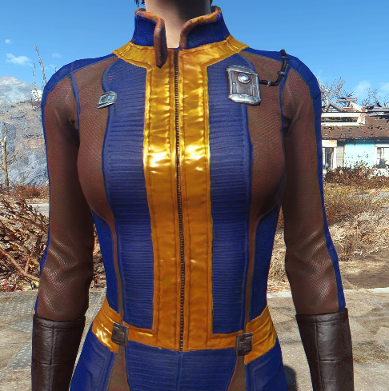
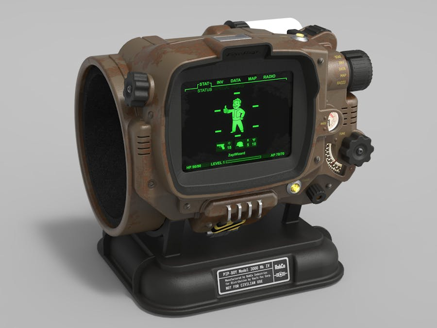
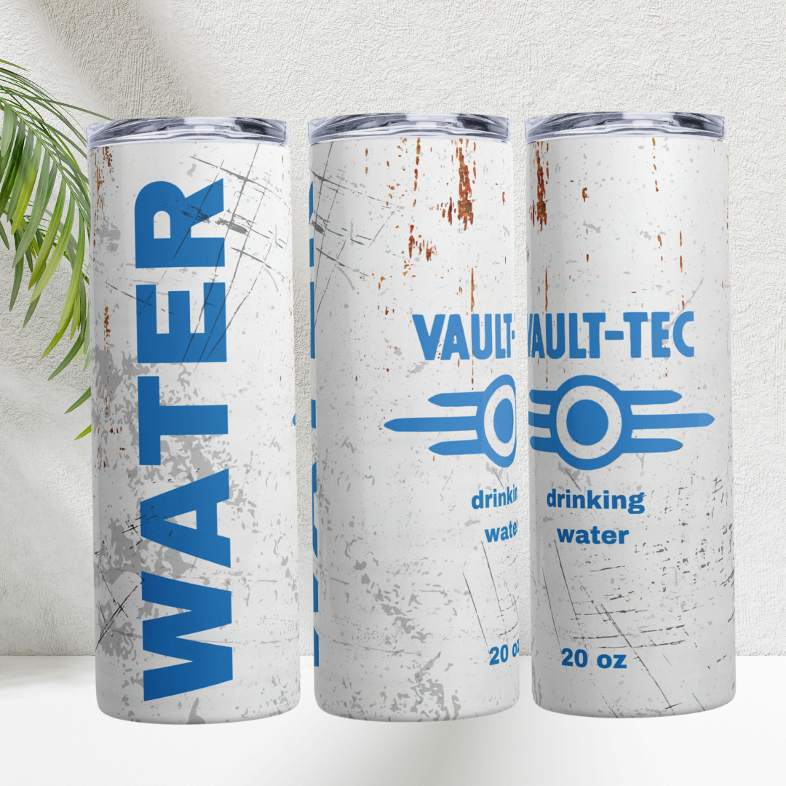
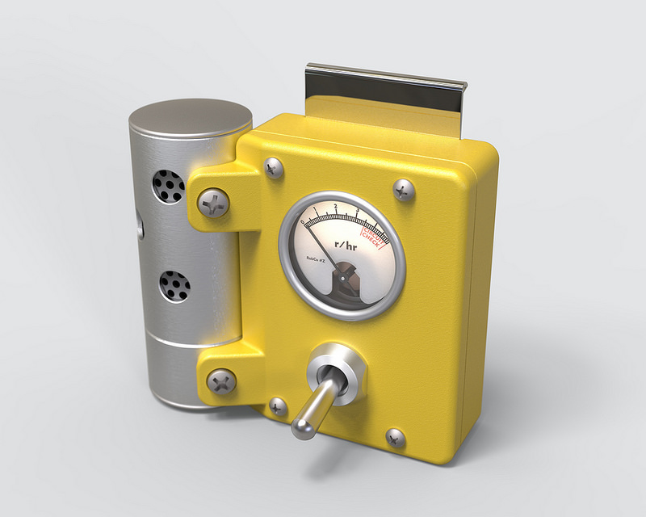

La historia de Vault-Tec se remonta a los turbulentos días de la Guerra Fría, cuando el miedo a una guerra nuclear era palpable y la humanidad enfrentaba una creciente amenaza de destrucción total. Fundada en 2054, Vault-Tec Corporation surgió como una respuesta a este temor existencial, prometiendo seguridad y protección a los ciudadanos de los Estados Unidos en caso de un holocausto nuclear. Con el respaldo del gobierno y recursos ilimitados a su disposición, Vault-Tec comenzó a construir una red de bóvedas subterráneas masivas, conocidas como Vaults, diseñadas para albergar a una porción seleccionada de la población y preservar la vida humana en caso de una catástrofe nuclear.
En el vasto y desolado paisaje del universo de "Fallout", pocas organizaciones son tan emblemáticas y misteriosas como Vault-Tec Corporation. Como una de las piedras angulares de la serie de juegos de rol de Bethesda Game Studios, Vault-Tec es una entidad omnipresente cuya sombra se extiende sobre la historia y el lore del mundo post-apocalíptico de "Fallout". Desde sus intrigantes bóvedas subterráneas hasta sus oscuros experimentos sociales, Vault-Tec ha capturado la imaginación de los jugadores y los ha sumergido en un mundo de conspiración, supervivencia y redención.
Vault-Tec Corporation, no solo se limita a la construcción de bóvedas subterráneas, sino que también ha desarrollado una variedad de productos destinados a la supervivencia, la comodidad y la seguridad en un mundo post-apocalíptico. Estos productos, diseñados con la innovación característica de Vault-Tec, reflejan la visión de la corporación de salvaguardar el futuro de la humanidad en tiempos difíciles. Los siguientes son algunos de los productos principales que utiliza el jugador dentro del juego.

Vault-Tec Vault Suit
La Vault-Tec Vault Suit es el uniforme estándar emitido a los residentes de los Vaults. Fabricado con materiales duraderos y tecnología avanzada, el Vault Suit ofrece protección contra la radiación y los elementos, mientras que su diseño ergonómico proporciona comodidad y movilidad óptimas. Además de su funcionalidad práctica, el Vault Suit se ha convertido en un símbolo de identidad y pertenencia para los habitantes de los Vaults.

Pip-Boy 300
El Pip-Boy 3000 es un dispositivo multifuncional de muñeca desarrollado por Vault-Tec para ayudar a los residentes de los Vaults en su vida diaria. Equipado con una pantalla monocromática, un sistema de navegación GPS y una variedad de aplicaciones útiles, como un diario personal y un registro médico, el Pip-Boy 3000 es una herramienta indispensable para la supervivencia en el yermo. Su diseño robusto y su interfaz intuitiva lo convierten en un compañero confiable para cualquier explorador.

Vault-Tec Water Purification Tablets
En un mundo donde el suministro de agua potable es escaso y contaminado, Vault-Tec Water Purification Tablets ofrecen una solución efectiva para purificar agua de fuentes no confiables. Desarrollados utilizando tecnología de vanguardia, estos comprimidos eliminan bacterias, virus y otros contaminantes, proporcionando agua segura para beber en cualquier situación. Compactos y fáciles de transportar, los Water Purification Tablets son un elemento esencial en cualquier kit de supervivencia.

Vault-Tec Emergency Ration Pack
El Vault-Tec Emergency Ration Pack es una colección de alimentos envasados al vacío diseñados para proporcionar una nutrición completa y sostenible en situaciones de emergencia. Cada paquete incluye una variedad de alimentos no perecederos, como barras de granola, enlatados y frutas deshidratadas, que ofrecen una fuente de energía y nutrientes esenciales para mantener la vitalidad y la resistencia en condiciones adversas. Compacto y fácil de transportar, el Emergency Ration Pack es un salvavidas para cualquier sobreviviente del yermo.

Vault-Tec Geiger Counter
El Vault-Tec Geiger Counter es un dispositivo portátil diseñado para detectar niveles de radiación en el medio ambiente. Equipado con un sensor altamente sensible y una pantalla de lectura digital, el Geiger Counter proporciona información vital sobre los peligros de la radiación y ayuda a los usuarios a evitar áreas contaminadas. Compacto y fácil de usar, este dispositivo esencial brinda tranquilidad a los exploradores del yermo mientras navegan por un mundo lleno de amenazas radiactivas.
Si bien Vault-Tec presentó sus Vaults como refugios seguros para la humanidad, pronto se revelaría que la verdadera naturaleza de estas instalaciones era mucho más siniestra. Detrás de la fachada de seguridad y protección, cada Vault estaba impregnada de secretos y experimentos oscuros diseñados para estudiar el comportamiento humano y poner a prueba los límites de la moralidad en condiciones extremas.
A través de los juegos de la serie "Fallout", los jugadores descubren gradualmente los horrores ocultos de Vault-Tec, desde Vaults que fueron utilizados como laboratorios para experimentos genéticos y sociales hasta aquellos que se convirtieron en arenas mortales para juegos y pruebas psicológicas retorcidas. Estos revelaciones arrojan luz sobre la verdadera naturaleza de Vault-Tec y su papel en el mundo devastado por la guerra de "Fallout".
Además de su legado de experimentación y manipulación, Vault-Tec dejó una marca indeleble en la cultura y la estética del universo de "Fallout". Desde el icónico logotipo de la corporación hasta los diseños de los Vaults mismos, la influencia de Vault-Tec se puede ver en todos los rincones del mundo post-apocalíptico.
La estética retrofuturista de Vault-Tec, con sus diseños de los años 50 y 60, evoca una sensación de nostalgia por una era pasada, mientras que al mismo tiempo proyecta una visión distópica del futuro. Esta fusión de estilos crea un ambiente único y reconocible que ha definido la estética visual de la serie "Fallout" y ha contribuido en gran medida a su atractivo duradero entre los fanáticos del juego.
A lo largo de los juegos de la serie "Fallout", Vault-Tec sigue siendo una fuerza influyente que da forma al mundo y a los personajes que lo habitan. Desde los relatos de los supervivientes de los Vaults hasta los descubrimientos de los protagonistas en su búsqueda de respuestas, la sombra de Vault-Tec está siempre presente, recordándonos los peligros de la ambición desenfrenada y el poder sin restricciones.
En última instancia, Vault-Tec encarna las complejidades morales y éticas del mundo de "Fallout", recordándonos que incluso en los momentos más oscuros de la historia humana, la esperanza y la redención aún pueden encontrarse entre las cenizas. A medida que los jugadores exploran los Vaults olvidados y desentierran los secretos ocultos del pasado, están invitados a reflexionar sobre las lecciones que Vault-Tec tiene para ofrecer y a enfrentar los desafíos que el futuro puede deparar. En un mundo lleno de peligros y incertidumbre, Vault-Tec sigue siendo un faro de conocimiento y una advertencia contra los excesos de la humanidad.